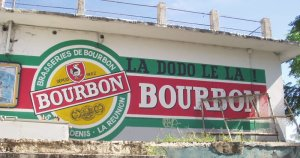

Dodo, de la mousse et des bulles
2000
← Plongée sous-marine
Mariage →
Les étazuniens ont la Bud, les Métropilitains ont la Kro. Au pays du Rhum Charette, il y a aussi une bière nationnale, la Dodo.

Publicité Dodo - photo de Damien Boilley (licence : BY 2.5)
Les brasseries Bourbon fabriquent depuis longtemps cette bière de type pils du même nom. Il est écrit BOURBON en gros sur l'étiquette mais les Réunionnais ont pris l'habitude de l'appeller Dodo, du nom de ce drôle d'oiseau sur l'étiquette. Ce n'est pas un oiseau mytique, mais une espèce endèmique de l'île voisine, Maurice, qui s'est éteinte dès le 17e siecle. La bière elle, coule toujours dans les gosiers de l'île. On en trouve parfois dans les supermarchés de la métropole.
Comme toute grande brasserie, la marque explore de nouvelle voies promotionnelles. Le site web de la
dodo présente surtout les archives des campagnes de pub et les verres que l'on retrouvent sur les coin de tables dans toute l'île.
Esperons que tout le monde saura consommer la rafaichissante avec modération.